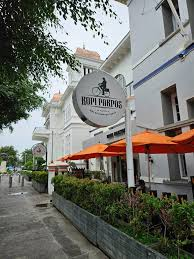
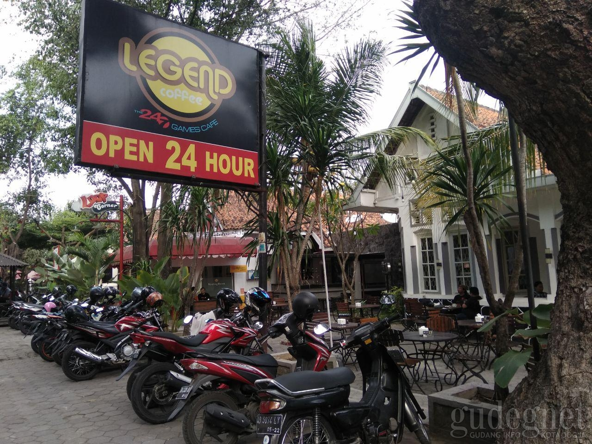
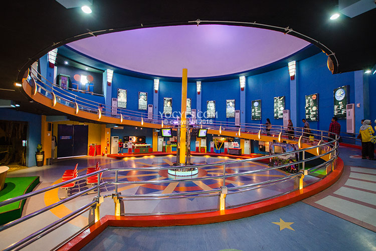
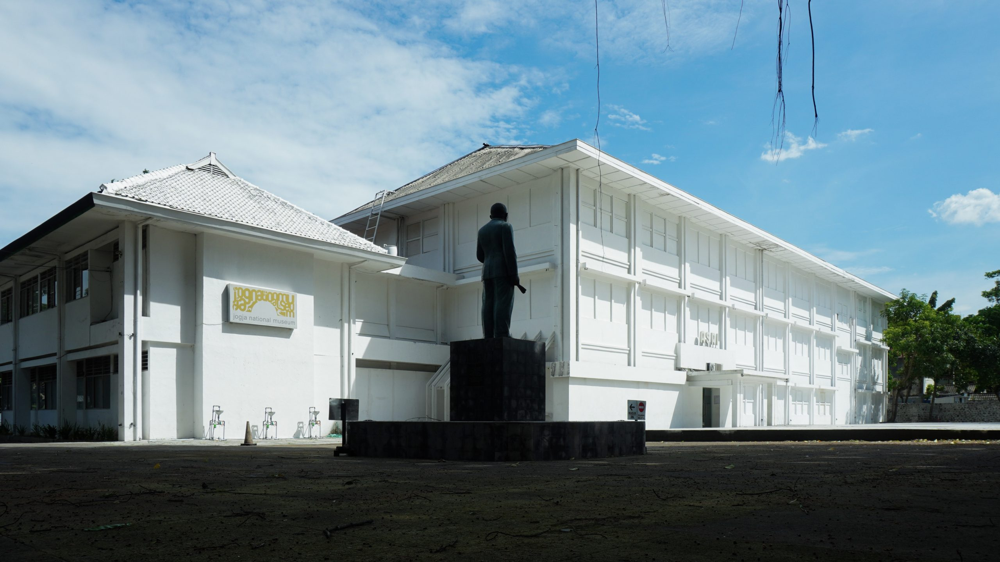

Tempat Terkenal di Yogyakarta

Kopi Pakpos
Lokasi: Malioboro. Café legendaris dengan suasana santai di tengah kota.

Legend Cafe
Lokasi: Jalan Abu Bakar Ali. Tempat nongkrong malam hari favorit anak muda Jogja.

Taman Pintar
Lokasi: Pusat Kota. Taman edukatif dengan wahana interaktif untuk semua umur.

Gembira Loka Zoo
Lokasi: Kotagede. Tempat rekreasi keluarga dengan koleksi satwa dan ruang hijau luas.
Museum Vredeburg
Lokasi: Malioboro. Museum sejarah dengan diorama perjuangan bangsa Indonesia.

Jogja National Museum
Lokasi: Wirobrajan. Museum seni kontemporer dengan pameran yang dinamis dan kreatif.